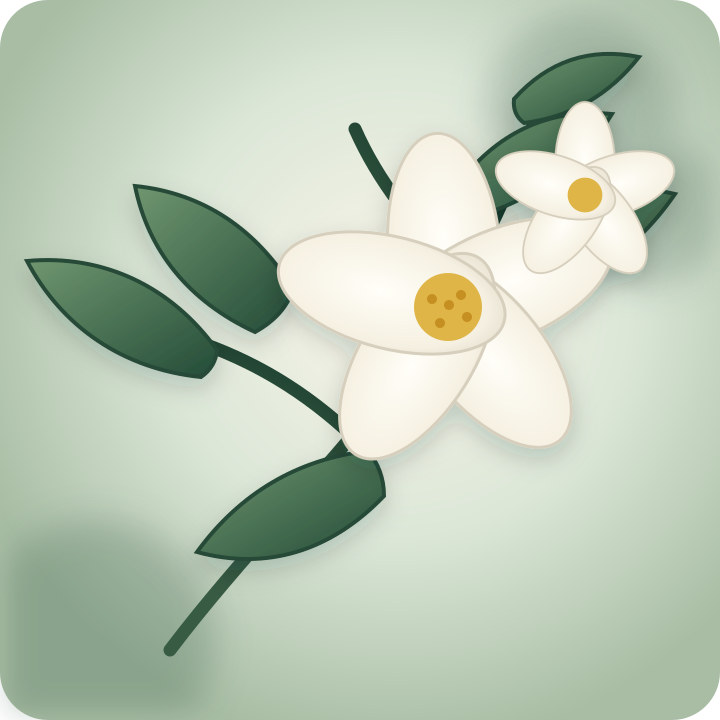

Un mondo di piante a portata di mano
Scopri la natura
intorno a te.
Scatta una foto, documenta ciò che incontri e costruisci il tuo erbario personale. Se le prove non bastano, HERBARIUM non forza mai un nome.
Ogni pianta racconta una storia.

OsservaConosci
Rispetta

Piccoli gesti, grandi cambiamenti